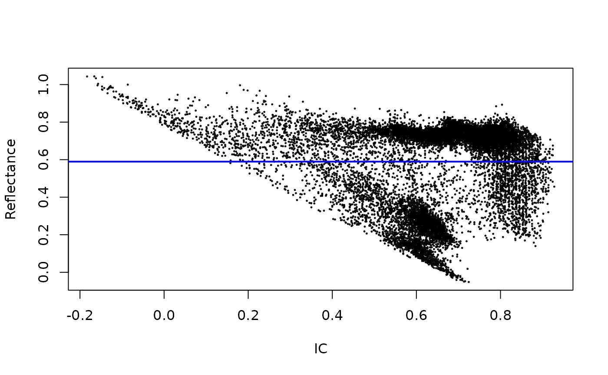

This function creates a scatterplot of surface reflectance vs. illumination condition (IC). The plot can be used to explore the dependency of the original and the topographically-corrected surface reflectance data on IC.
Examples
outline <- system.file("extdata/athabasca_outline.shp", package = "SatRbedo")
nir <- system.file("extdata/athabasca_B8A_20200911.tif", package = "SatRbedo")
dem <- system.file("extdata/athabasca_dem.tif", package = "SatRbedo")
nir <- preproc(grd = nir, outline = outline)
dem <- preproc(grd = dem, outline = outline)
SAA <- 164.8
SZA <- 48.9
corr <- topo_corr(band = nir, dem = dem, SAA = SAA, SZA = SZA, method = "tanrotation")
# Scatterplot of IC vs. uncorrected surface reflectance
topo_splot(corr$bands[[1]], nir)
# Scatterplot of IC vs. topographically-corrected surface reflectance
topo_splot(corr$bands[[1]], corr$bands[[2]])
